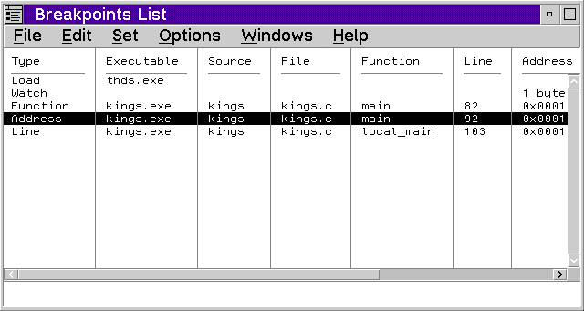

Use the Breakpoints List window to display a list of the breakpoints that have been set. The following information is provided for each breakpoint that has been set:
To display the Breakpoints List window, select List from the Breakpoints menu or select the Breakpoints button in the tool bar.
